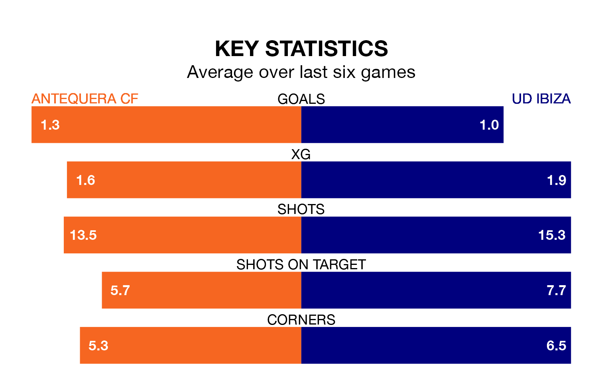

UD Ibiza travel to the Estadio El Maulí for Sunday's early match against Antequera CF looking to bounce back from defeat last time out in Primera Division RFEF Group 2.
Ibiza, who sit third in the league after 33 games, fell to a 1-0 home defeat to Atlético Madrid B on April 21.
They face an Antequera side who picked up a win in their last match, a 3-2 victory against Algeciras CF, and who sit eighth in the table.
With 52 goals in 33 games so far this season, Ibiza are the league's third-highest scorers with 1.6 goals per game. And they are conceding fewer than average, letting in 28 goals at a rate of 0.8 per game.
Antequera are also above average scorers, with 1.2 goals per game, compared to a league average of 1.1. They have also conceded 1.2 goals per game.
In Luis Miguel Redondo Fernandez, the hosts have one of the league's most on-form strikers so far this season. He has notched 10 goals in 23 appearances, to sit second in the scoring charts.
His goal rate of one every 197 minutes is quicker than that of Serge Patrick Njoh Soko, the away team's top scorer with a goal every 229 minutes, and a total of eight goals in 23 games.
Antequera are in reasonable form in Primera Division RFEF Group 2, with three wins and two draws from their last six games.
With two wins and a draw over that period, Ibiza's form is worse – they have taken seven points from 18, compared to Antequera's 11.
Updated: 07:59 (UTC), 26/04/24